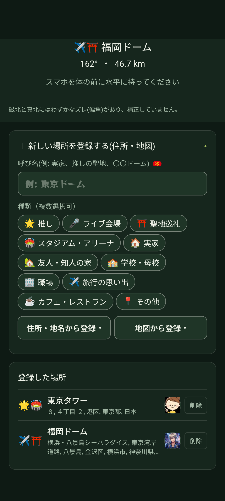
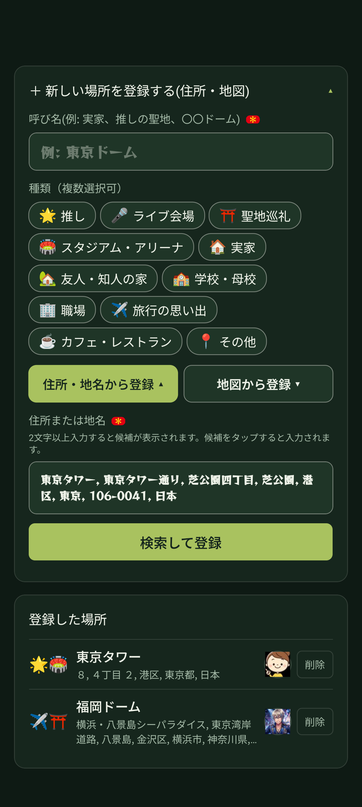
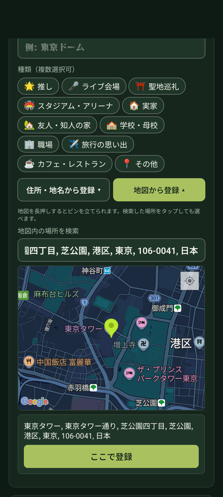

📖 はじめに（この画面でできること）
メインコンパス画面を下にスクロールすると、「＋ 新しい場所を登録する（住所・地図）」アコーディオンと「登録した場所」一覧が表示されます。

🏷️ 1. 呼び名の入力とカテゴリータグの選択
場所を登録する際は、わかりやすい名前とカテゴリータグを設定できます。
呼び名（必須）の入力
「呼び名」欄に、日常で使う名前を入力します（例：「実家」「推しの聖地」「〇〇ドーム」「思い出のカフェ」など）。
種類（タグ）の選択（複数選択可）
以下のタグを自由に組み合わせて選べます：
🌟 推し / 🎤 ライブ会場 / ⛩️ 聖地巡礼 / 🏟️ スタジアム・アリーナ / 🏠 実家 / 🏡 友人・知人の家 / 🏫 学校・母校 / 🏢 職場 / ✈️ 旅行の思い出 / ☕ カフェ・レストラン / 📍 その他
🔍 2. 住所・地名から検索して登録
住所や駅名、有名な建物名から検索してすばやく位置を決定できます。

「住所・地名から登録 ▼」をタップ
登録パネル内の「住所・地名から登録」ボタンを押して入力欄を開きます。
2文字以上を入力して候補を選ぶ
施設名や住所を2文字以上入力すると、下に候補の住所が表示されます。正しい候補をタップすると入力欄に反映されます。
「検索して登録」をタップ
「検索して登録」ボタンを押すと、緯度経度が自動計算されて登録完了となります。
🗺️ 3. 地図（Googleマップ）からピン留めして登録
視覚的にGoogleマップを見ながら、目的の位置をピンポイントに指定できます。

「地図から登録 ▼」をタップ
「地図から登録」ボタンを押すと、インタラクティブなGoogleマップが表示されます。
地図の長押しでピンを立てる
登録したい場所を地図上で長押し（ロングタップ）すると、そこにピンが立ちます。また、上部の地図内検索バーから検索してピンを置くことも可能です。
「ここで登録」をタップ
ピンを立てた場所の住所・地名が下部に表示されます。内容を確認し、「ここで登録」ボタンをタップして完了です。
🗑️ 4. 登録した場所の管理・削除
登録した場所は、登録パネル下の「登録した場所」リストに並びます。
各場所の右側にある「削除」ボタンをタップすると、確認の上で登録を解除できます。不要になった場所はいつでも整理が可能です。
❓ よくある質問
はい、全世界の住所や地名・ランドマークに対応しています。地図からのピン指定でも世界中どこでも自由に登録できます。
一度削除して新しく登録し直すか、バックアップファイルを活用することで整えることができます。